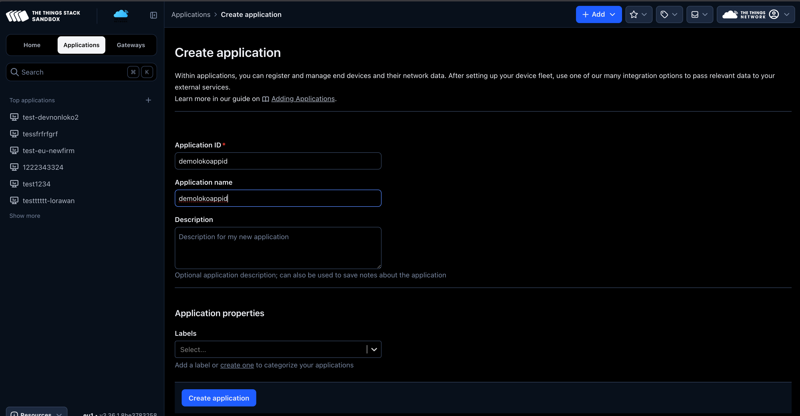
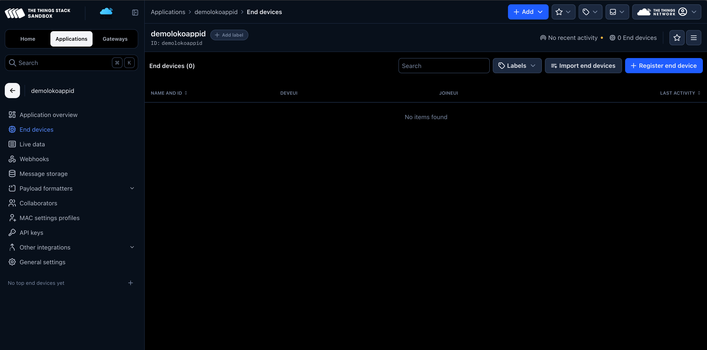
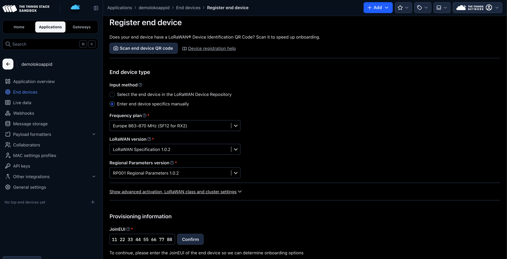
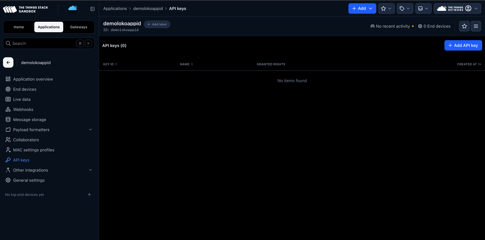
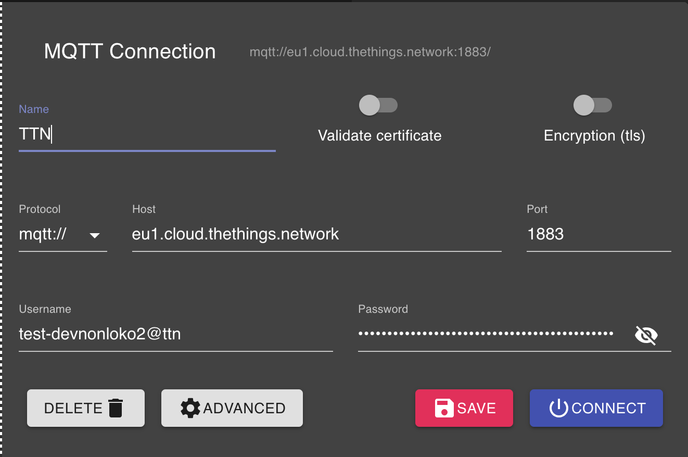
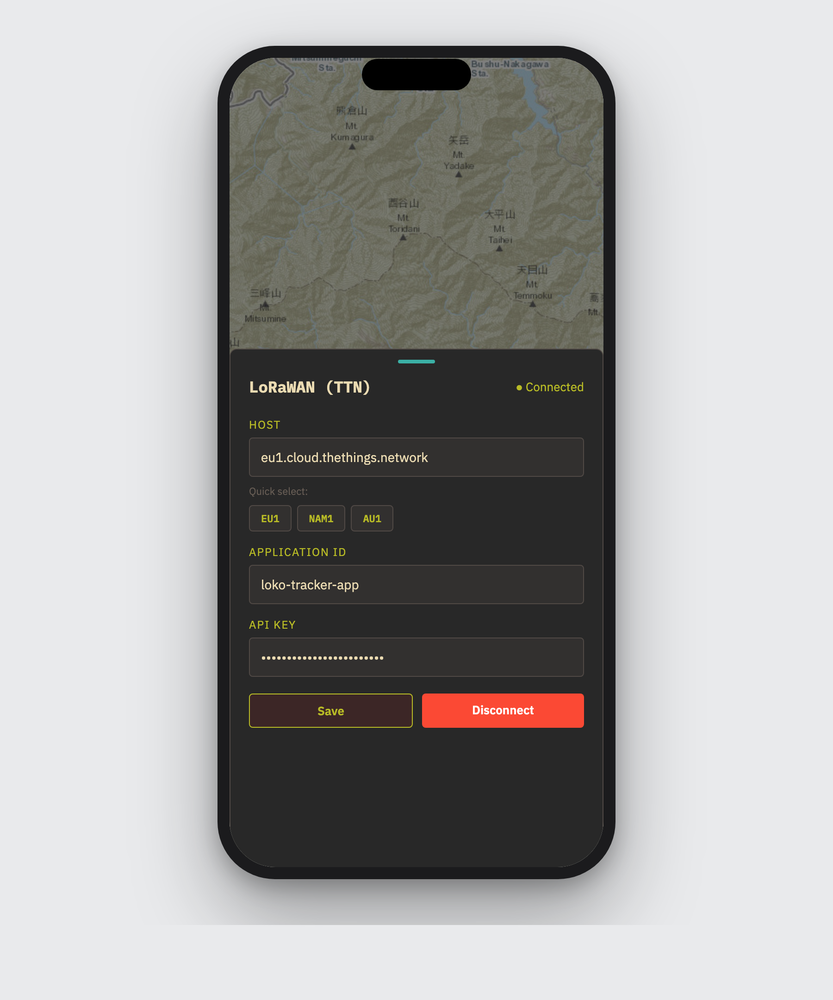

Pair your LOKO Air trackers with The Things Network (TTN) and start receiving live positions in the app — in four short steps.
LOKO receives your tracker positions over LoRaWAN, a long-range, low-power radio network. To bridge those radio messages to your phone, the app connects to The Things Network (TTN) — a free, global LoRaWAN community network.
Setup happens in two places: first you create an application on the TTN console and register your devices, then you paste two credentials into the LOKO app. Here's everything you need.
Log in to the TTN console, open the Applications section and click + Add application. Give it an ID and a name, then click Create application.

1 2demolokoappid. The ID must be lowercase and
can't be changed later.In the left sidebar open End devices, then click Register end device.

1 2On the registration screen, choose “Enter end device specifics manually”, then fill in the device details from your LOKO Air (frequency plan, LoRaWAN version and the provisioning info such as JoinEUI / DevEUI).

1 2Back in the sidebar, open API keys and click + Add API key. Grant it the rights to read application traffic, then save.

1 2Before putting the credentials into LOKO, you can verify they work with any open-source MQTT client — for example MQTT Explorer. It connects straight to TTN's MQTT server and shows the raw uplink messages, which is a quick way to confirm everything is set up correctly.

1 2 3 4mqtt://,
Host eu1.cloud.thethings.network (match your region),
Port 1883. The Username is your Application ID
with @ttn appended (same rule as the app!), and the Password
is your API key. Hit Connect — if it connects and you see topics
appear, your credentials are good to go.Open the LOKO app, go to the LoRaWAN (TTN) sheet, and enter your credentials. Pick your region with the Quick select buttons (EU1 / NAM1 / AU1), then paste the Application ID and API key.

1 @ttn 2 3@ttn to your Application ID.
In the app's Application ID field, append @ttn to the end of the
ID you noted in Step 1. Without this suffix the connection will fail.Tap Save. When the status indicator at the top of the sheet turns to ● Connected, the app is live on the network and your tracker positions will start arriving on the map.
Your LOKO Air devices are now streaming their positions through TTN into the app. From here you can set up geofences, view archived tracks, and download offline maps for the field.